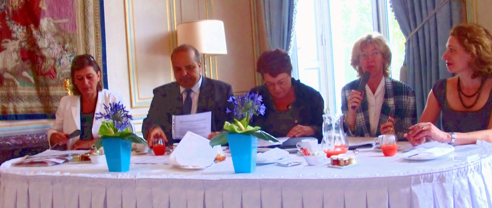
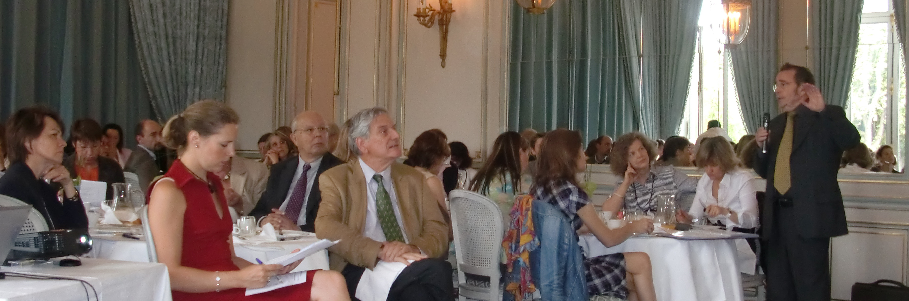

Historique
Le communiqué de presse ci-dessous indique la reprise par Guy Le Péchon de G & S, cabinet de conseil créé en 2003 par des membres de l'association ADAE
Communiqué de presse du 4 mai 2009
Gouvernance et Structures propose aux Conseils d'Administration des prestations intégrées
Gouvernance & Structures, société d'études et de conseil créée en 2003, vient d'être reprise par l'un de ses associés fondateurs, Consultancy International Services.
Désormais animé par son associé/gérant, Guy Le Péchon, X-INSEAD, membre de l'IFA, les « Gouvernance-Advisors » du réseau G & S peuvent mener des missions très diverses : diagnostic et « benchmarking » sur le fonctionnement ou la composition des Conseils d'Administration en vue d'en augmenter la valeur ajoutée, recherche de mandataires sociaux dont des administrateurs en particulier indépendants, utilisation ad-hoc des nouvelles technologies, enquêtes et études sur la « corporate gouvernance».
Ainsi dernièrement G&S a mené une étude approfondie sur la place des femmes mandataires sociaux au sein de 550 entreprises françaises cotées sur Euronext et antérieurement une enquête originale à l'époque sur le thème de - gouvernance, performance et modernité-, enquête en collaboration avec l'ADAE et la société Acadys auprès d'un échantillon comprenant des entreprises moyennes et filiales de groupes étrangers.
Site internet : http://www.g-et-s.com
Contacts : info@g-et-s.com
Courrier : Guy Le Péchon, G & S, 2 allées des Troènes, 92330 SCEAUX, France
Tél : +33(0)6 16 31 07 15
G & S pionnier pour observation de la féminisation des Conseils d'Administration
G & S a été le premier à présenter des statistiques détaillées sur la féminisation des conseils des sociétés cotées sur Euronext Paris, lors d'une réunion des anciens de l'INSEAD en juillet 2009 pendant le temps de préparation de la loi Copé Zimmerman.
L'étude G & S sur « La place des femmes administrateurs dans les sociétés cotées françaises » présentée ci-dessous a été mise à jour à partir des rapports annuels à fin 2009.
|
  |
Le Petit déjeuner organisé début juillet 2009
Voir les photos dans la colonne de gauche Le thème a été introduit par Guy Le Péchon, Associé/Gérant de
Pour télédécharger le programme de cet évènement cliquer ici |